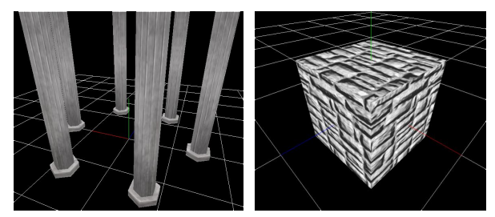
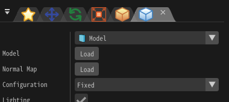

Render - Model
Overview
Here we explain the parameters that affect the drawing when "Model" is selected in the Render window.
When "Model" is selected, an external 3D model can be imported and displayed.
The color / distortion image set in the Basic Render Settings window will be used to texture the model. Depending on the model, it may be displayed incorrectly unless depth writing and depth test are enabled.

Parameters

"Render Settings" window
Model
There are three types of models: File, Procedural, and External.
If you load from file, specify FBX (.fbx), Metasequoia (.mqo), glTF (.gltf/.glb), OBJ (.obj), GEO (.geo/.bgeo), or Effekseer model files (.efkmodel). If you specify a source format other than .efkmodel, an .efkmodel file is generated in the same directory. That generated file is required when the effect is played in other applications.
You can also load animated FBX (.fbx) files. The first animation in the FBX file is played.
If you want to use a procedural model, create a model in the Procedural Model panel and specify it.
In the editor, external models reference entries registered in Behavior. At runtime, provide external models when playing the effect, and specify the external model index on the rendering side. Also specify local or world coordinate space as needed.
Configuration
Specify how to draw the particle's model.
| Configuration | Description |
|---|---|
| Billboard | The model always rotates to face the camera. |
| Rotated Billboard | The model rotates to face the camera while keeping the Z axis fixed. |
| Directional Billboard | The model faces the camera while rotating so that its Y+ direction points along the direction of movement. |
| Fixed Y-axis | The model rotates to face the camera while keeping the Y axis fixed. |
| Fixed | The model will match the rotation setting of the particle. |
Culling
Specify which side(s) of the model's faces should be displayed.
Overall Color
Specify the color tone of the whole model.